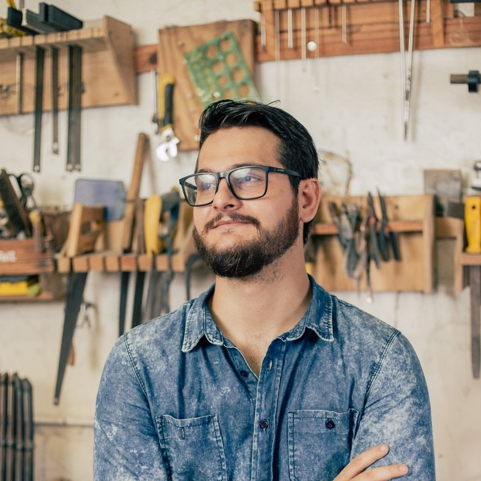

Olá, me chamo Lucas de Lima Duarte.
Sou um UX designer jr. com um background de 5 anos de design de produtos fisicos
Baixar CVSou um UX designer jr. com um background de 5 anos de design de produtos fisicos
Baixar CVAlguns cases apresentão todo o processo de Design que sigo em UX e alguns cases estão focados so em UI.
Apresentando pessoas e facilitando conexões.
Case de UX

Ornare nulla proin odio consequat.
Ornare nulla proin odio consequat.
Estou constantemente tendo idéias, adoro defende-las, não nunca me apaixono por elas ao ponto de não muda-las.
Maker auto didata, desde os 11 anos brinco com eletrônica e robótica o que levou a começar minha vida profissional na área de eletrotécnica e desenvolvimento de Hardware, fui gerente do primeiro FabLab do Ceará, em 2015 iniciei a trabalhar com design de produtos físicos e prototipagem rápida. Participei na organização de alguns eventos de tecnologia.
Palestrei em eventos e faculdades sobre:
- Prototipagem Rápida
- Criatividade
- Design de Produto
De 2018 a 2020 empreendi com um escritório próprio de Design de produto, mas vim a fechar devido a pandemia.
2021 comecei a estudar áreas para trabalhar com produtos digitais e me identifiquei com o UX e product design, vi que tem muitos pontos em comum com o que eu já gostava de trabalhar e outros que sempre quis fazer..
Vamos discutir uma oportunidade de trabalharmos juntos!